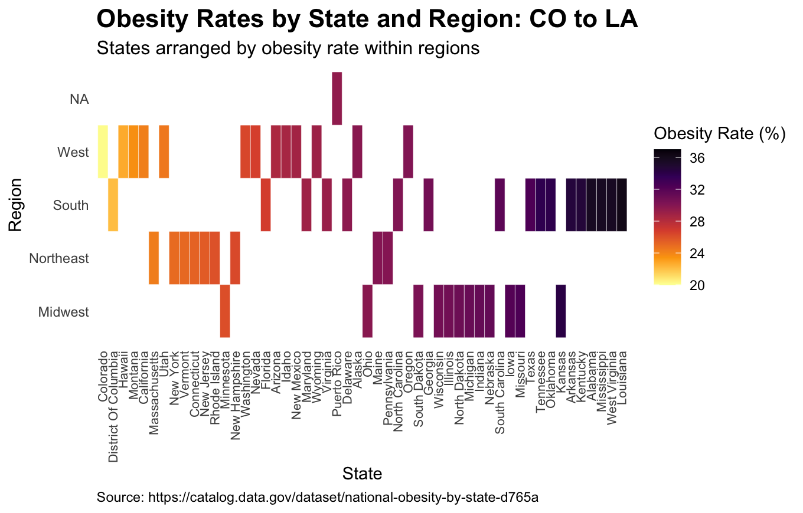
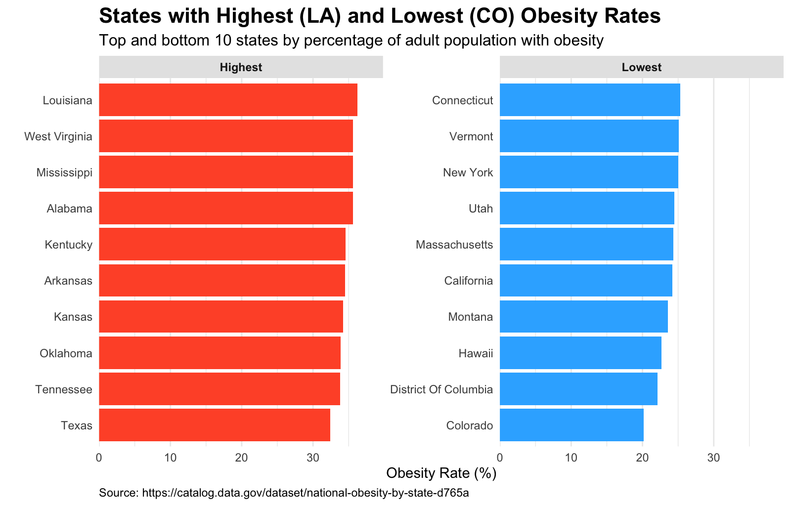
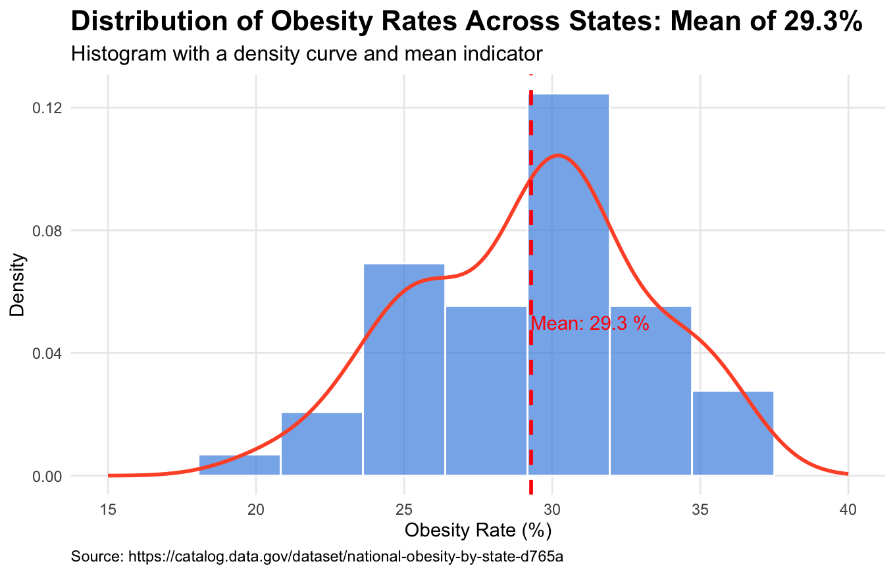

Analysis includes obesity rates of all 50 states, Washington D.C., & Puerto Rico. This analysis is meant to highlight the obesity rates in different states & territories of the United States and how they differ. The analysis is based on the data from Data.gov - a repository of government data of all types (local, state, & federal). All analysis, charts, data narrative, and website was made by Peter Graham.

This visualization shows the geographic distribution of obesity rates across different states and territories. Regional patterns in obesity prevalence can be clearly observed - many more Liberal states tend to have a lower obesity rate than their Conservative counterparts.

This chart compares obesity rates across different demographic factors, highlighting significant variations between regions in regards to obesity rates in adult populations. We can see from this chart that even within the adult populations, although some states might differ in placement, the more Liberal states still tend to have a lower rate of obesity when compared to their Conservative counterparts.

This analysis examines obesity rates between states and finds a national average of 29.3%. Based on trend line within the histogram, one can see that the peak of the trend line is above 30%. This is a call to awareness in regards to obesity in America, with the rate only going up over time.
This analysis uses data from the National Obesity By State dataset available on Data.gov. Access the complete dataset here .